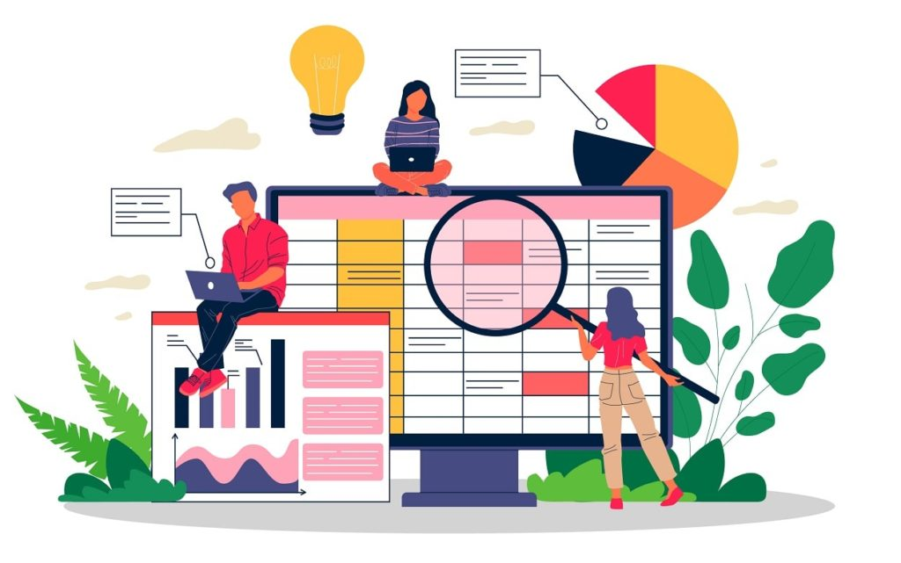
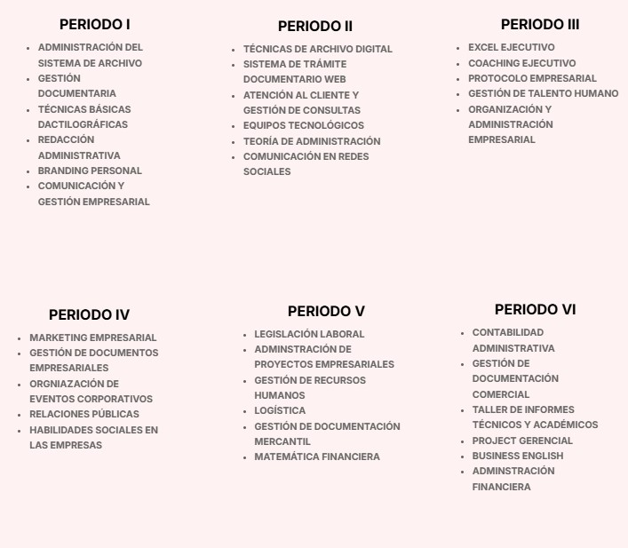

(044) 123456
(044) 123456 informes@institutotrujillo.edu.pe
informes@institutotrujillo.edu.pe


ASISTENCIA ADMINISTRATIVA
«La gestión del tiempo y la priorización son aspectos clave de la asistencia administrativa eficaz»

Asistencia Administrativa
El profesional técnico en asistencia administrativa posee las competencias para administrar la documentación, programar, organizar y controlar las actividades/eventos, teniendo en cuenta sus características y la administración de los recursos disponibles (humanos, materiales, financieros, entre otros) en función a las políticas y procedimientos de la organización y la normativa correspondiente.
Competencias
- - Programar actividades y eventos con las normativas correspondientes
- - Organizar actividades administrativas
- - Controlar el cumplimiento de las actividades
- - Administrar recursos humanos
- - Administrar la documentación

¿QUÉ SE ESTUDIA EN ASISTENCIA ADMINISTRATIVA?
Horario - Asistencia Administrativa
| Periodo Académico | Turno Mañana |
|---|---|
| Periodo I | |
| Periodo III | |
| Periodo v |